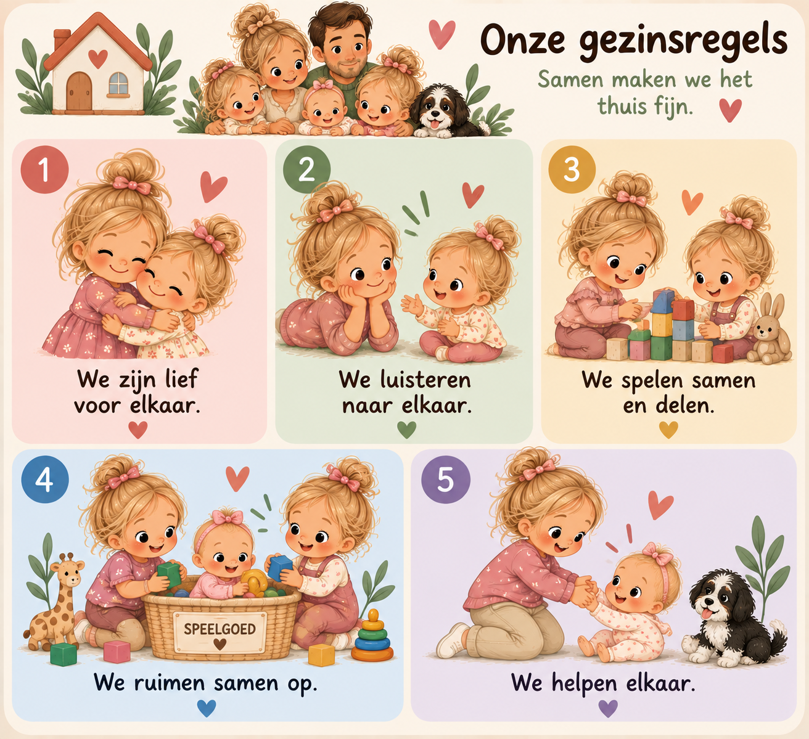

🌈 Ons Gezin
Weekplanner
👩 Ouderscherm
👧 Kindscherm
🏡 Gezinsregels
⭐ Beloningen
🗓️ Mem-planning
Google login
‹
›
Verbinden met Firebase…
👉 NU
🌞
✓ Klaar
15:00
⏱️ Time Timer – rood vlak loopt terug
▶ Start
⏸ Pauze
↺ Opnieuw
➡️ DAARNA
🍳
Eerst dit, daarna het volgende 💛
🏡 Onze gezinsregels
Samen maken we het thuis fijn.

⭐ Beloningssysteem
Maak zelf doelen. Kinderen kunnen meerdere sterren op één dag verdienen. Bij 5 sterren is de afgesproken beloning verdiend.
Nieuw doel toevoegen
Doel / activiteit
Doelperiode
Dagelijks doel
Wekelijks doel
Beloning bij 5 sterren
+ Doel toevoegen
🗓️ Mem-planning
Jouw eigen planning, los van het kindscherm. Huishouden, sport en lessen staan hier overzichtelijk bij elkaar.
Vandaag
🧹 Huishouden
🏃 Sport & lessen
Details
✕